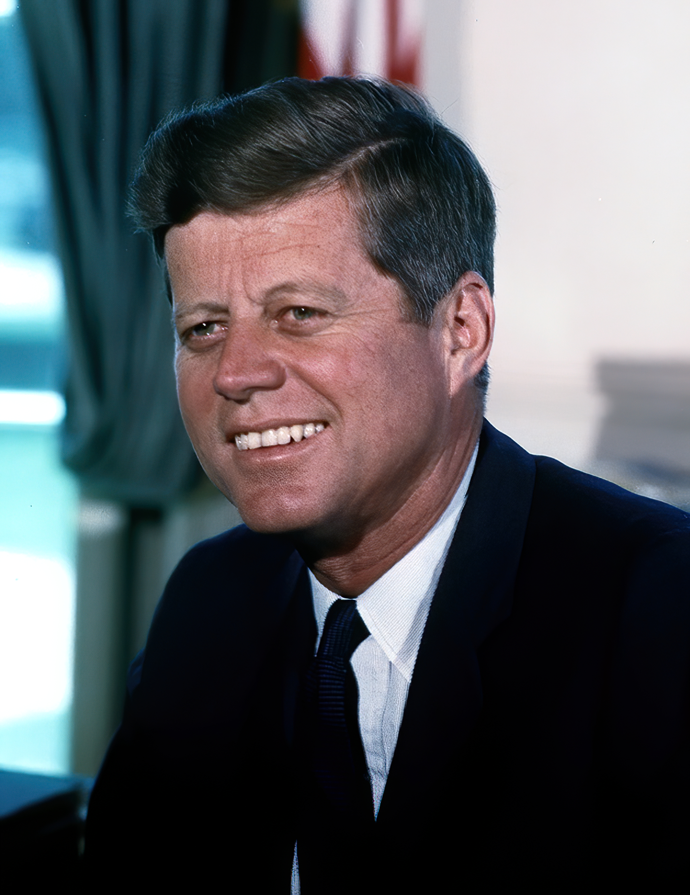

Sunday · Psych / soc
: 's concept of collective decision-making pathology, then the of April 1961 as the grounding case study
What means — a mode of thinking in cohesive groups where the desire for unanimity and cohesion overrides realistic appraisal of alternatives, leading to flawed decisions — then the of Cuba in April 1961 as the historical case study that grounded 's 1972 analysis of how 's advisors suppressed and reached a catastrophically poor decision.


This lesson presents as a concept first, then the as the grounding historical case study. introduced the term 'groupthink' in a 1971 Psychology Today article and elaborated the framework in his 1972 book , analyzing the , , the Korean War escalation, and . The case is drawn from 's retrospective analysis based on memoirs, interviews, and declassified documents, not from real-time observation. The invasion's failure had multiple causes: planning errors, faulty intelligence about Cuban popular support, logistical mistakes, last-minute changes to the landing site and air support, overconfidence, and yes, advisory-group dynamics that suppressed . is one explanatory lens among several. identified symptoms (, , , , who shield the group from dissenting information, ) and (high cohesion, insulation, , lack of norms for methodical procedures). Subsequent research has debated whether is a distinct syndrome or a cluster of known social-psychological processes (, , ). Some studies replicated aspects of in lab and field settings; others found the evidence mixed. The concept has been applied to the space shuttle disaster, the , corporate boards, military planning, and jury deliberations. Critics note that 's case studies were retrospective, that the symptoms overlap with other group phenomena, and that some predictions (like the relationship between cohesion and poor decisions) have not held consistently. The lesson treats as a useful heuristic for understanding how cohesive groups can make bad decisions when is suppressed, not as a universal or inevitable outcome of group decision-making.
Select any words, or tap a dotted term.
- 1960 CIA plan inherited by Kennedy The under the Eisenhower administration developed a plan to train Cuban exiles to invade Cuba and overthrow 's government, which had come to power in January 1959. President-elect inherited the plan in late 1960.
- January–March 1961 Kennedy administration planning meetings and his advisors — including Secretary of State , Secretary of Defense , National Security Advisor , Director , and others — held meetings to review and approve the invasion plan. Doubts were expressed but not fully debated.
- April 17–19, 1961 Bay of Pigs invasion and failure About 1,400 Cuban exiles of landed at the on Cuba's southern coast. Within seventy-two hours the invasion failed. Most of the brigade were killed or captured. The U.S. role was exposed, embarrassing the administration and strengthening .
- 1961–1962 Post-mortems and Kennedy's response took public responsibility for the failure. He commissioned internal reviews and changed his advisory process, notably during the of October 1962, when he structured discussions to encourage and avoid .
- 1971 Janis coins 'groupthink' , a research psychologist at Yale, published an article in Psychology Today introducing the term 'groupthink' to describe the decision-making. He defined it as a mode of thinking where the desire for unanimity overrides realistic appraisal.
- 1972 Victims of Groupthink published 's book : A Psychological Study of Foreign-Policy Decisions and Fiascoes analyzed the , , Korea, and Vietnam through the lens, identifying symptoms and antecedents.
- 1982 Second edition: Groupthink published a revised and expanded edition titled : Psychological Studies of Policy Decisions and Fiascoes, adding the and other cases. The concept entered organizational behavior and political science curricula.
- January 28, 1986 Challenger disaster The space shuttle exploded seventy-three seconds after launch, killing all seven crew members. Post-accident analysis pointed to dynamics in NASA and contractor decision-making about launching in cold weather despite engineers' warnings.
- 1990s–2000s Applications and critiques Researchers applied to corporate boards, the decision-making, the , and jury deliberations. Meta-analyses and critiques questioned the empirical evidence and whether is a distinct phenomenon or a relabeling of and .
- 2020s Legacy and usage remains widely taught in psychology, business, and public policy courses. The term entered popular usage to describe any situation where a group suppresses . Empirical support is mixed, but the concept is valued as a cautionary framework.
The concept
What groupthink means: when cohesive groups suppress dissent and critical thinking in pursuit of unanimity, producing flawed decisions
is a mode of thinking that occurs in cohesive groups when the desire for harmony and consensus overrides the motivation to realistically appraise alternative courses of action. , a research psychologist at Yale, coined the term in a 1971 article in Psychology Today and elaborated the concept in his 1972 book . The idea is straightforward but consequential: when a group is tightly knit, when its members value their membership and the approval of their peers, and when the group faces a decision under pressure, the social forces toward unanimity can become so strong that they suppress independent critical thinking. Members self-censor their doubts, assume that silence means agreement, and rationalize away information that contradicts the emerging consensus. The result is not wisdom but a decision-making pathology. The group converges on a choice that may be disastrously flawed because no one fully examined the alternatives, tested the assumptions, or voiced the objections that individuals privately harbored.
identified eight . : the group becomes overconfident, believing that nothing can go wrong. Belief in the : members assume their cause is just, so they do not question the ethical implications of their decisions. : the group constructs explanations to discount warnings or negative feedback. : opponents or critics are viewed as too weak, evil, or stupid to be taken seriously. : members suppress their own doubts and do not voice objections. : because is not expressed, the group assumes everyone agrees. : anyone who does speak up is pressured to conform. : some members take it upon themselves to shield the group from information that might disrupt the consensus. Not all symptoms need be present, but when several appear together, the group is in the grip of .
also specified that make more likely. High group is a necessary condition: if members do not care about the group or one another, they have no reason to suppress for the sake of harmony. Structural faults in the organization amplify the risk: from outside information and experts, (a leader who states preferences early and strongly), lack of established norms for methodical decision-making procedures, and homogeneity of members' backgrounds and ideology. Finally, a provocative situational context — high stress from external threats, recent failures that lower self-esteem, moral dilemmas — can push the group toward premature consensus as a way to reduce anxiety. When these conditions align, can take hold even among intelligent, well-meaning, experienced decision-makers. The concept is not about stupidity or malice. It is about social dynamics that distort judgment.
The mechanism
How groupthink operates: the symptoms and processes that lead cohesive groups to make poor decisions
begins with cohesion. A is one where members like and respect one another, share goals, and value their membership. Cohesion is generally a good thing: it fosters trust, cooperation, commitment. But cohesion has a dark side. When a faces a difficult decision, members may prioritize preserving group harmony over critically evaluating the decision. The fear is that raising objections will be seen as disloyalty, will upset colleagues, will mark the dissenter as a troublemaker. So doubts are kept private. The group moves toward consensus not because everyone genuinely agrees, but because no one wants to disrupt the unity. This is , and it is the engine of .
Once takes hold, other symptoms follow. If no one voices , the group develops an . Members assume that silence means agreement. The lack of debate is interpreted as validation of the emerging plan. The group then becomes overconfident. If everyone agrees, the plan must be sound. This leads the group to underestimate risks and dismiss warnings. When contrary information does surface — from outside experts, from intelligence reports, from junior members — the group engages in . They find reasons to discount the warnings. Maybe the source is unreliable. Maybe the risk is exaggerated. Maybe the situation has changed. The group talks itself into believing that the objections do not matter. This is not necessarily conscious manipulation; it is a motivated reasoning process where the desire to reach consensus biases how information is interpreted.
reinforces the . If the decision involves adversaries or critics, the group caricatures them as weak, stupid, or evil. This makes it easier to dismiss their potential responses. If the enemy is incompetent, our risky plan will work. If critics are biased, we can ignore their objections. Stereotyping serves a psychological function: it simplifies the decision and reduces doubt. The group also develops a belief in its inherent morality. We are the good guys; our intentions are pure; therefore our actions must be right. This moral certainty makes it harder to consider ethical objections or unintended consequences. If anyone does break the silence and raise concerns, the group applies direct pressure. The dissenter may be ridiculed, questioned about loyalty, or simply ignored. The message is clear: get on board or be excluded. This pressure is often subtle — a dismissive comment, a change of subject, a facial expression — but it is effective. Most people do not persist in dissenting when the group signals disapproval.
Finally, emerge. These are members who appoint themselves to protect the group from disruptive information. A mindguard might intercept a critical memo before it reaches the leader. They might reassure the group that an expert's doubts are not worth discussing. They might steer the agenda away from uncomfortable topics. act from loyalty: they believe they are helping the group by filtering out noise and maintaining focus. But the effect is to insulate the group from reality. The decision-making process becomes a closed loop where only confirming information circulates. The group converges on a decision that feels unanimous, coherent, and morally justified. And then, when the decision is implemented, it fails. The risks that were dismissed turn out to be real. The adversaries who were stereotyped as weak prove capable. The moral certainty does not prevent a debacle. produces not just bad decisions, but predictable patterns of bad decisions: incomplete survey of alternatives, incomplete survey of objectives, failure to examine risks, poor information search, selective bias, and no contingency planning.
The case study
The Bay of Pigs invasion, April 1961: how Kennedy's advisory group suppressed dissent and approved a catastrophically flawed plan
When took office in January 1961, he inherited a plan from the Eisenhower administration. The plan was to train Cuban exiles, land them on the coast of Cuba, trigger an uprising, and overthrow 's government. had come to power in January 1959, aligning Cuba with the Soviet Union during the . The had been recruiting and training anti-Castro Cubans in Guatemala. The operation was in motion. had to decide whether to proceed, modify, or cancel it. He convened his top advisors: Secretary of State , Secretary of Defense , National Security Advisor , Director , Deputy Director , and others including historian . The group met repeatedly in March and early April 1961. The meetings had the appearance of thorough deliberation. In reality, according to 's analysis based on memoirs and interviews, they were in action.
The advisory group was cohesive. had assembled a team of smart, accomplished men — the so-called best and the brightest. They respected one another. They were newcomers to power, eager to prove themselves competent and tough in the . The situational context was provocative: was seen as a communist threat ninety miles from Florida, and Republicans were accusing of being soft on communism. The pressure was on to act. The structural faults were present. The group was insulated from outside expertise: State Department officials and some military leaders had doubts, but they were not fully included in the deliberations. 's leadership was partly directive: he signaled early that he was inclined to approve the operation, though he wanted plausible deniability of direct U.S. involvement. There were no established procedures for methodical review of alternatives. The group was ideologically homogeneous: all Cold Warriors, all committed to confronting communism.
The emerged. : the group convinced itself that the plan would work because the had succeeded in overthrowing the Guatemalan government in 1954. If we did it there, we can do it in Cuba. The group underestimated the loyalty of 's forces and the difficulty of the operation. : the advisors saw the operation as justified because was a dictator and a Soviet ally. The morality of secretly invading another country was not seriously debated. : when intelligence reports indicated that had broad popular support and that no widespread uprising was likely, the group rationalized the intelligence away. Maybe the analysts were wrong. Maybe the exiles' presence would change minds. Stereotyping: 's team stereotyped 's military as poorly trained peasants who would fold quickly. They also stereotyped the Cuban people as longing for liberation, ignoring evidence that many supported the revolution.
was pervasive. , , and others later admitted that they had private doubts but did not press them in meetings. wrote a memo to outlining objections, but he did not argue forcefully in the group sessions. said afterward that he sensed the group was moving toward approval and did not want to be the one to derail it. : because dissenters stayed silent, the group appeared unified. interpreted the lack of vocal opposition as consensus. The meetings ended with a sense that everyone was on board. Direct pressure was subtle but real. When someone did raise a concern, others in the group minimized it or changed the subject. The tone was: we've been over this, let's move forward. appeared. , the officer in charge, reassured the group that the operation was low-risk and that contingency plans were in place. Some information about logistical problems and intelligence doubts was not shared with the full group or was downplayed.
The decision was made. On April 17, 1961, about fourteen hundred men of landed at the on Cuba's southern coast. The plan called for an initial airstrike to destroy 's air force, followed by the landing, then a march inland to establish a provisional government. The reality was chaos. The initial airstrike, using planes disguised as Cuban defectors' aircraft, failed to destroy 's planes. , worried about exposing U.S. involvement, canceled follow-up strikes. 's forces responded quickly. The landing site, changed at the last minute from Trinidad to the more remote , was poorly chosen. Coral reefs damaged landing craft. Supplies were lost. The expected popular uprising did not happen. 's troops, supported by tanks and aircraft, overwhelmed the brigade. Within seventy-two hours, the invasion collapsed. About one hundred fourteen members of the brigade were killed. The rest, nearly twelve hundred men, were captured. They would be ransomed back to the United States over a year later. The operation was a humiliating failure. U.S. involvement was obvious to the world. 's position was strengthened. 's credibility was damaged. And the young administration had to ask: how did we approve such a flawed plan?
Janis's analysis
How Irving Janis retrospectively diagnosed the Bay of Pigs as groupthink, and what Kennedy learned
was not present at the meetings. He learned about them from published memoirs, especially 's A Thousand Days (1965) and 's (1965), and from interviews and declassified documents that became available in the late 1960s. was struck by the disconnect between the group's talent and the decision's badness. These were not fools. was thoughtful. , , and were brilliant. was a Pulitzer Prize–winning historian. How did they collectively produce a plan that, in hindsight, was obviously doomed? proposed that the answer lay in group dynamics, not individual incompetence. He coined the term to label the phenomenon and set out to identify its features.
interviewed some of the participants and read their accounts. He found repeated themes. regretted his silence: 'I can only explain my failure to do more than raise a few timid questions by reporting that one's impulse to blow the whistle on this nonsense was simply undone by the circumstances of the discussion.' described the meetings as marked by assumptions of success, lack of hard questioning, and a rush to consensus. Robert , the president's brother and attorney general, was not at the early meetings but later reflected that the group had not seriously considered what would go wrong. mapped these accounts onto social-psychological concepts: , , (where everyone privately doubts but assumes others agree), and (groups making riskier decisions than individuals). He synthesized them into the framework: antecedents, symptoms, and outcomes.
himself recognized the problem. After the , he conducted post-mortems. He took public responsibility for the failure, telling the press that 'victory has a hundred fathers and defeat is an orphan' — but he was the president and the responsibility was his. Privately, he restructured his advisory process. He would no longer allow meetings to slide into premature consensus. He instituted practices to counter . He would break large groups into smaller subgroups to work independently on the same problem, then compare their conclusions. He would invite outside experts who had no stake in the prior consensus. He would sometimes absent himself from meetings so that advisors would not feel pressure to agree with him. He would assign trusted aides (especially his brother Robert) to play , arguing against the prevailing view even if they privately supported it. He would encourage written memos laying out dissenting positions. These were not just procedural tweaks; they were structural changes designed to create where had suppressed it.
The test came in October 1962, when U.S. reconnaissance planes discovered that the Soviet Union was placing nuclear missiles in Cuba, ninety miles from Florida. The was a far more dangerous situation than the . A wrong decision could lead to nuclear war. convened an Executive Committee (ExComm) of advisors. Many were the same people who had been in the meetings. But this time, structured the deliberations differently. ExComm met repeatedly over thirteen days, often splitting into subgroups. did not attend every session. Advisors were encouraged to debate freely. Robert and challenged assumptions. Outside experts, including Soviet specialists, were consulted. The discussions were contentious. Options ranged from doing nothing, to a naval blockade (called a quarantine for legal reasons), to airstrikes, to a full invasion. The group considered the risks of each option, war-gamed Soviet responses, and developed contingency plans. There was no . The decision was difficult, the risks enormous, the outcome uncertain. chose the quarantine: a naval blockade to prevent further missiles from reaching Cuba, combined with a demand that the Soviets remove the missiles already there. He left room for negotiation. The Soviets, after tense back-and-forth, agreed to withdraw the missiles. The crisis ended without war.
contrasted the two cases. Same president, same advisors, similar stakes. One a disaster, the other a success. The difference was not in the people but in the process. The meetings were insulated, cohesive, directive, and rushed. The meetings were structured for , exposed to outside input, and deliberate. 's analysis suggested that is not inevitable. Cohesive groups can make good decisions if they implement procedures to counteract the pressures. The lesson was practical: leaders who understand can design decision processes to avoid it. learned the lesson in the hardest way possible, but he learned it.
Other cases
Groupthink applied to Pearl Harbor, Vietnam, Watergate, Challenger, corporate failures, and policy errors
's 1972 book analyzed three other major U.S. foreign-policy decisions through the lens: the failure to anticipate the Japanese attack on in December 1941, the decision to escalate the Korean War by crossing the 38th parallel in 1950 (which brought China into the war and led to stalemate), and the Johnson administration's escalation of the Vietnam War in the mid-1960s. In each case, identified . At , U.S. military and intelligence leaders were overconfident, dismissed warnings, and stereotyped the Japanese as unlikely to attack. During the Korean War decision-making, General MacArthur's advisors suppressed doubts about Chinese intervention. In Vietnam, the group around President Johnson (including , , and , carryovers from ) rationalized away evidence that the war was unwinnable, pressured dissenters like Undersecretary of State George Ball, and exhibited illusions of invulnerability. 's method was historical case analysis, not experimental proof, but the patterns were striking.
The 1982 second edition added the . After the break-in at the Democratic National Committee headquarters in June 1972, President Nixon and a small group of aides (H. R. Haldeman, John Ehrlichman, John Dean) decided to cover up the White House's involvement. analyzed the cover-up decision-making as : the group was cohesive and insulated, exhibited (we can control the investigation), self-censored doubts, and applied pressure on anyone (like John Dean, eventually) who questioned the strategy. The cover-up escalated through lying to investigators, paying hush money, and obstructing justice. When the truth emerged, Nixon was forced to resign in August 1974. The case extended beyond foreign policy to domestic political scandal, showing the concept's generality.
The in January 1986 became the most famous non-Janis case study. On the night before the launch, engineers at Morton Thiokol, the contractor that built the solid rocket boosters, warned that the O-rings sealing the booster joints might fail in the cold temperatures forecast for the morning. and other engineers presented data showing that O-rings lost resilience in cold. They recommended against launching. NASA managers and Morton Thiokol executives, under pressure to maintain the launch schedule and prove the shuttle's reliability, held a teleconference. The meeting exhibited : NASA managers dismissed the engineers' concerns (), applied pressure on Thiokol to reverse the no-launch recommendation, and Thiokol executives overruled their own engineers (). Thiokol's senior vice president told engineers to 'take off your engineering hat and put on your management hat,' signaling that loyalty to the organization's schedule mattered more than technical judgment. The launch was approved. Seventy-three seconds after liftoff, exploded, killing all seven crew members. Post-accident investigations identified as a key factor. The Presidential Commission's report cited , pressure, and suppression of . Sociologist Diane Vaughan later called it the 'normalization of deviance': risky practices became routine because was not heard.
Corporate failures have also been analyzed through . The involved investment banks, rating agencies, and regulators who collectively ignored warnings about subprime mortgages and excessive leverage. Boards of directors at companies like Enron and WorldCom exhibited : close-knit, deferential to charismatic CEOs, stereotyping critics as uninformed, and rationalizing away signs of fraud. The 2003 decision by the Bush administration to invade Iraq was critiqued as : selective use of intelligence about weapons of mass destruction, within the and State Department, stereotyping of Saddam Hussein, and overconfidence about the war's ease and outcome. Subsequent inquiries found that dissenting intelligence analyses were marginalized and that the decision-making group was insulated from contrary views.
has been applied to jury deliberations, medical teams, aviation crews, and military units. Studies have shown that cohesive juries can suppress minority viewpoints, that surgical teams with strong hierarchy may not speak up about errors, and that cockpit crews sometimes defer to a captain's bad decision. In aviation, Crew Resource Management training was developed partly in response to groupthink-like dynamics that contributed to crashes. The concept has entered organizational behavior textbooks, leadership training, and popular usage. When a committee or board makes an obviously bad decision, observers often say, 'It was .' The term has become shorthand for collective irrationality driven by social pressure.
Critiques and evidence
Does groupthink hold up? Mixed empirical evidence, alternative explanations, and ongoing debates
's case studies were compelling narratives, but they were retrospective and based on selective evidence. Critics have pointed out that his method — analyzing historical decisions after the outcome is known — is vulnerable to hindsight bias. Knowing that the failed, it is easy to see . Would we see the same symptoms if the invasion had succeeded? acknowledged that he focused on fiascoes because they reveal dysfunctional processes, but this leaves open the question of whether the same symptoms might appear in successful decisions. Some researchers have argued that apparent could be reinterpreted: might be politeness or prioritization; might reflect genuine agreement; might be reasonable inference given limited information. Without real-time observation and comparison to control cases, it is hard to prove that , as a distinct syndrome, caused the failures.
Experimental tests of have produced mixed results. Laboratory studies have found that cohesive groups do sometimes suppress and make riskier decisions, consistent with . But the effects are not always large or consistent. Some studies found that cohesion improves decision quality by increasing trust and information sharing. The relationship between cohesion and poor decisions is not straightforward. predicted that high cohesion plus structural faults (like ) would produce , but empirical studies have not always confirmed the interaction. Some researchers argue that is not a unitary phenomenon but a cluster of known social-psychological processes: (), obedience to authority (), , , , and confirmation bias. may be a useful label for the cluster, but not a new mechanism.
Meta-analyses have tried to synthesize the evidence. A review by Whyte in 1998 found that laboratory studies supported some predictions (like ) but not others (like the role of cohesion). A review by Turner and Pratkanis in the 2000s concluded that is better understood as a failure of leadership and decision procedures than as a consequence of cohesion per se. They proposed that 's are really about poor structure: insulated groups, directive leaders, lack of norms for debate. Cohesion might be necessary for , but it is not sufficient; the real culprit is the absence of procedural safeguards. This reframing suggests that the remedy is not to reduce cohesion (which would harm morale) but to improve decision processes.
Field studies of real organizations have found evidence of groupthink-like patterns in some settings but not others. The case is well-documented and fits the model. But other disasters do not fit as neatly. Some bad decisions occur in groups that are not cohesive, that have , and that follow procedures, but still fail because of bad information, bad luck, or genuine dilemmas where no good option exists. explains some failures but not all. Political scientists have debated whether the really was or whether other factors were more important: overconfidence, ideology, 's inexperience, the momentum of a plan already in motion. 's emphasis on group dynamics may have underplayed the role of institutional interests (the wanting to justify its budget) and geopolitical context (the pressure to act tough against communism). is one lens among several for understanding policy fiascoes.
Despite these critiques, remains influential. It is taught in psychology, business schools, political science, and public administration. Leaders are warned about it. Organizations adopt procedures explicitly designed to counter : devil's advocates, red teams, premortems, anonymous voting, structured debate. The concept's staying power suggests it captures something important: the risk that social cohesion and the desire for harmony can override critical thinking. Even if is not a perfect scientific theory, it is a useful heuristic. It reminds decision-makers to structure , question assumptions, seek outside views, and resist the pull of premature consensus. That practical value, more than experimental proof, is why has endured for more than fifty years.
A question
A question to keep asking
When you are part of a group making a decision — a committee, a team, a board, a family — do you feel free to voice doubts and objections, or do you self-censor to preserve harmony? If you are a leader, have you created a and a process where is not only tolerated but actively solicited, or does your presence in the room signal that the decision is already made? And when a group converges quickly on a plan, is the unanimity genuine, or is it an illusion covering unspoken reservations? The lesson of is not to avoid cohesion or consensus, but to ask whether the consensus is real, whether it has been tested, and whether anyone has been brave enough — or structurally enabled — to say 'I think we are making a mistake.'
Fun fact
Kennedy changed his process after the Bay of Pigs, and it may have saved the world during the Cuban Missile Crisis
After the failure in April 1961, explicitly restructured his advisory process to avoid . When the erupted in October 1962 — Soviet nuclear missiles discovered in Cuba — applied the lessons. He broke his advisors into subgroups to develop alternatives independently. He absented himself from some meetings so advisors would speak freely without trying to please him. He invited outside experts. He assigned his brother Robert and to play , challenging assumptions and questioning plans. The result was a more thorough debate. The administration chose a naval blockade (quarantine) over an immediate airstrike, leaving room for negotiation. The Soviets withdrew the missiles. Many historians believe the crisis could have escalated to nuclear war if had repeated the decision-making pattern. contrasted the two cases in his book: same president, similar national-security stakes, but one a fiasco and the other a case study in vigilant decision-making. The difference was process.